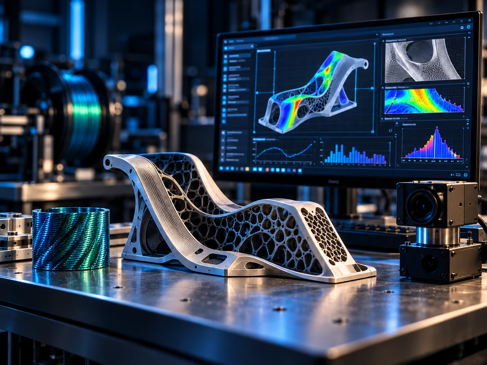

Engineering knowledge
Retrieving and structuring machine, process and experimental knowledge.
Exploring AI as an engineering assistance layer for advanced additive manufacturing.
MYCNC3D investigates how artificial intelligence can support engineering tasks around manufacturing software, process analysis, technical knowledge and the generation or evaluation of manufacturing strategies.

Project overview
Advanced additive manufacturing produces a large amount of technical context: geometry, machine configuration, material limits, process parameters, software behaviour and test results.
MYCNC3D explores AI systems that can help engineers navigate this complexity, accelerate software development, structure technical knowledge and evaluate candidate manufacturing strategies.
Why it matters
When hardware, software and process parameters evolve together, engineers must reason across many interacting domains. AI can potentially reduce the time required to retrieve context, compare experiments, generate candidate code or identify relevant constraints.
Its value must be demonstrated through measurable engineering outcomes rather than generic automation claims.
Current focus
Retrieving and structuring machine, process and experimental knowledge.
Assisting code generation, debugging, documentation and analysis for manufacturing software.
Comparing test results and identifying relationships between settings and observed behaviour.
Producing candidate manufacturing approaches from geometry, machine and process constraints.
Checking proposed approaches against deterministic engineering rules and known machine limits.
Keeping human review and deterministic validation between AI proposals and physical machine execution.
Engineering approach
Research begins with bounded engineering use cases rather than attempting to automate the entire manufacturing chain. Each use case should have a defined input, expected output and measurable criterion for usefulness.
Current status
Potential use cases are being evaluated according to technical value, repeatability, traceability and their ability to integrate with the broader manufacturing software stack.
The objective is to identify applications where AI provides a genuine engineering advantage rather than adding complexity without measurable benefit.
Next milestone
The next milestone is an experimental workflow with defined technical inputs, an AI-assisted output, deterministic validation and a measurable engineering benefit such as reduced development time or improved analysis.
Successful demonstration of such a workflow would justify progression toward EXPERIMENTAL.
Integrated platform
Within the MYCNC3D platform, AI is investigated as a cross-cutting assistance layer while deterministic machine and process constraints remain authoritative.
Collaboration
MYCNC3D is open to collaboration with AI platform providers, manufacturing-software developers, research teams and industrial partners interested in measurable, technically grounded AI-assisted engineering workflows.